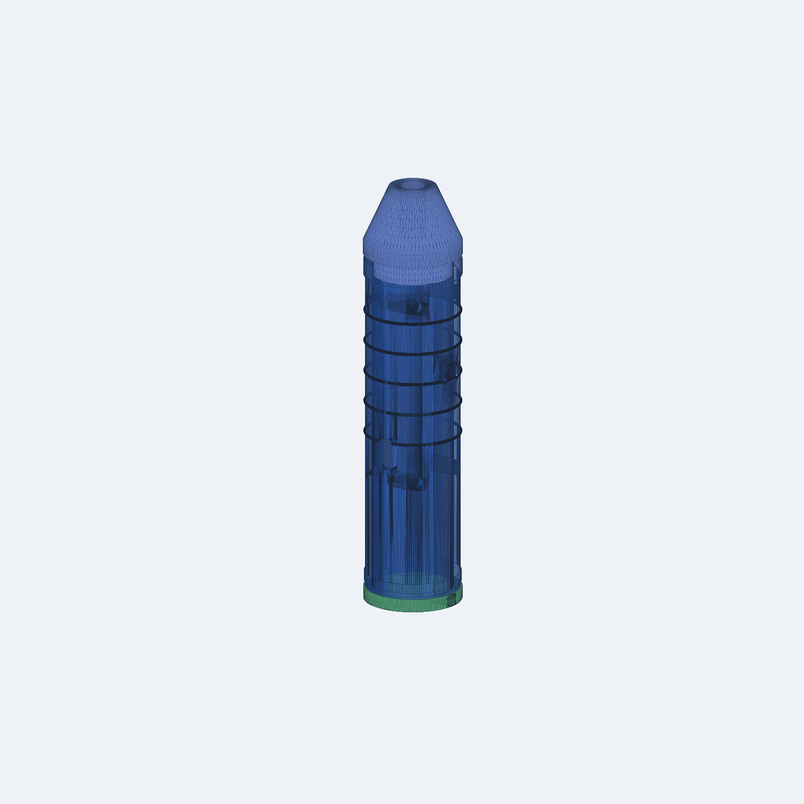
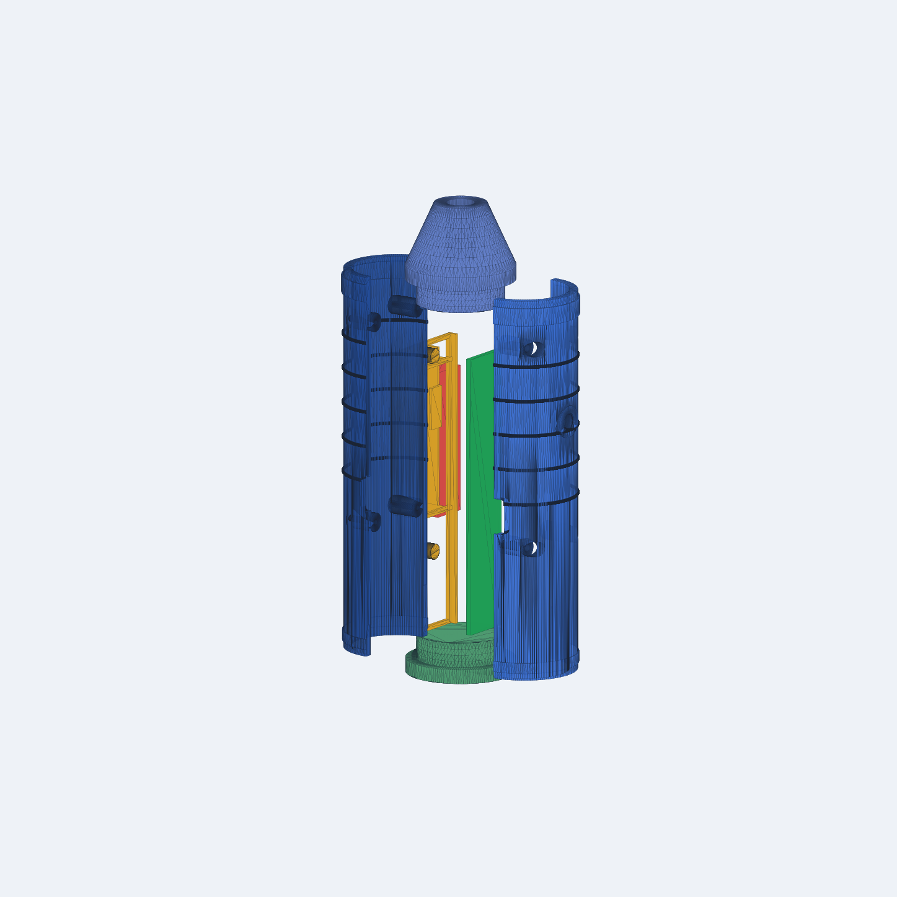
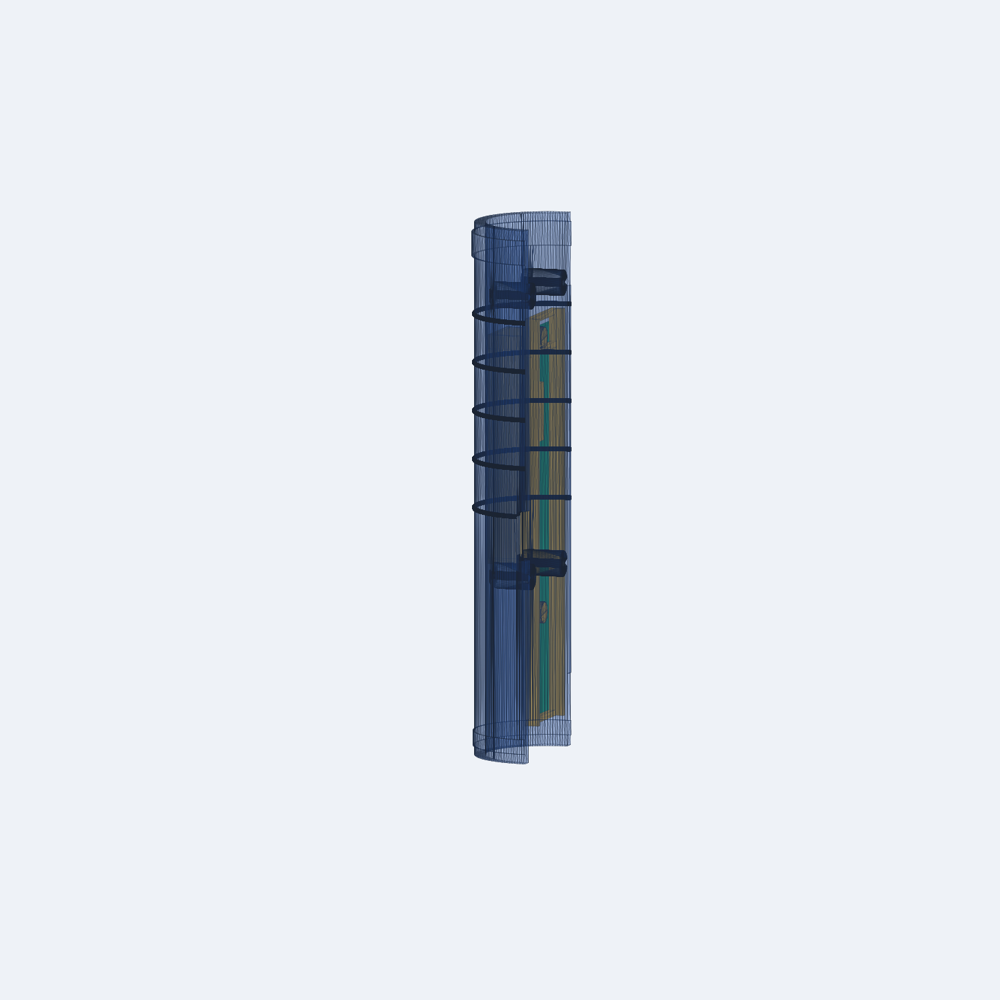

魔法杖 3D 打印装配审查
Rev A0 · PCB / 电池 / 天线 / 外壳跨域联调
VERIFIED_PRINT_CANDIDATE
装配视图

爆炸视图

电源仓剖开展示

关键校核
| 电池最大包络 | 11 × 6 × 42 mm |
| 电池径向最小余量 | 1.475 mm |
| 电池距天线区 | 11.0 mm |
| 线束弯曲预留 | 8.0 mm |
| PCB 源哈希 | 一致 |
| USB-C | +X 面，中心 z=47 mm |
| 按键 | +Y 面，中心 z=73.5 mm |
装配约束
- 只能使用受保护的 1S 锂电池包，并接入 10k NTC。
- 先装拉带和电池，再装 PCB；J2 三线不得被壳体夹住。
- z=5–30 mm 天线区不得放置电池、金属紧固件、屏蔽层或高密度填料。
- 首次通电前必须实测 JST 极性。
完整说明：PRINT_AND_ASSEMBLY_GUIDE.md；校核证据：reports/fit-and-power-validation.json